Recently, I needed to shift hue in GLSL, and which doesn’t have HSL. You only get the RGB (red, green, blue) color space. Fortunately, on a previous blog, I had written a post about hue shifting in RGB. I relearned how to do it from that.
So, I’m reproducing the original 2010 post here with added commentary. If you don’t want to read about how this works and just want to mess with a spectrum, here is my new tool for doing that.
How RGB is related to HSV, and how to implement hue shifting on the iPhone
Last weekend, I wrote some code that shifted hues in existing colors. To do that, I needed to improve my understanding of hue, saturation, and lightness. I had to go on a journey of learning! So, I thought I’d share my rainbow voyage with you here.
I started by poking around in Photoshop. If you’re familiar with Photoshop, you may recognize this dialog:
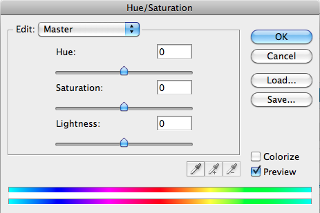
If you move around the Hue slider, your image changes color without changing either saturation (which can be described as ‘colorfulness’, sort of) or value (lightness). That is exactly the functionality I wanted to implement. In Photoshop, it’s also fun stuff that can make your photos look psychedelic.
Then, there’s this guy, the Color Picker:
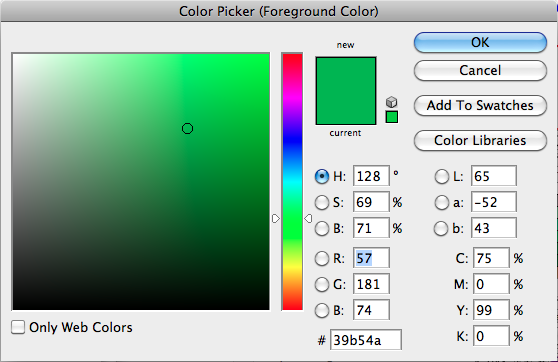
To pick your color, you click around in the box on the left and move the rainbow slider up and down. The number-containing boxes in the middle show you the RGB (red green blue) values of the color currently specified, which is handy. The rainbow slider is a hue controller, and the big box on the left represents lightness on its Y-axis and saturation on its X-axis.
When you sit down to code something like this, though, you can’t manipulate the hue directly like that, at least not on the iPhone. You can’t just say “give me this existing color’s hue” and then use that to compose a new color. Whether you’re using UIColor, CGColor, or cocos2d’s ccColor3B, the only way to manipulate the hue of an existing color is via RGB. Thus, you need to figure out how RGB affects HSV (hue saturation value/lightness).
At the time, I was making a pattern-making app with Cocos2D though, which only supports RGB to this day in 2025. UIColor didn’t support extracting RGB components until iOS 5.0) in 2011. So, I still would have learned how to hue shift with RGB even if I had known about UIColor’s HSL support.
Moving the hue slider in Photoshop’s color picker and noting the RGB value changes is a good way to do this. Try it, and you’ll notice that among the RGB values, there’s always a constant highest number, a constant lowest number, and a variable middle number.
Let’s say the color you start off with has an RGB of 57-181-107 (a mildly-bluish green). You can move the hue slider anywhere you want, but two of the RGB values will always be 57 and 181. If you slide it toward the orange spectrum, you’ll end up with something like 181-107-57. 181 and 57 are still in the mix, yet it’s an entirely different color.
When moving the hue slider, the limits remain constant because changing the upper and lower limits will affect the lightness and saturation of a color. If you move the cursor in the saturation/lightness color panel, however, those limits will change.
Lightness
On a display, if you max out red, green, and blue, the result is pure white. It follows that raising the upper limit among the RGB components of a given color will move it closer to white, whereas lowering the lower limit will move it further away from white. “Moving a color further away from white” is also known as “darkening a color.”
Saturation
Saturation is also affected by the upper and lower RGB limits, but by the two limits’ relative distance from each other, rather than by the limit’s absolute values. In RGB terms, gray occurs when each of the components’ values are close to one another. 177-171-161 is a kind of gray, for example. When all three components of a color have matching values, as in 177-177-177, that color is said to be totally desaturated.
Conversely, the further apart the RGB components are, the more saturated the colors become. e.g. 255-112-17 is a very intense orange. 255 and 17 are about as far apart as you can get.
Hue
If we want to change the hue while freezing saturation and lightness, we can’t change the upper and lower limits, as explained above. That leaves us just the following:
We can change the variable middle value. e.g. 112 in a color like 112-67-233. If we change 112 to 150, we get 150-67-233.
We can’t change the upper and lower limits, but we can swap their positions. e.g. In 112-67-233, we can move 67 and 233 and get
67-233-112.Now we know how to change the hue without messing with saturation or lightness, but we’re changing it haphazardly. To find out how to move the hue along the spectrum the way the Photoshop slider does, look at the RGB value changes that happen when the slider is slowly moved in the red-to-blue direction. You’ll see that:
One value (either R, G, or B) changes at a time.
- That value is either moves up until it hits the upper limit, or it moves down until it hits the lower limit.
- Once a value hits a limit, that value stops changing momentarily, and a different value starts moving.
Here’s a graph of the changes in the RGB values as the color is moved along the spectrum:
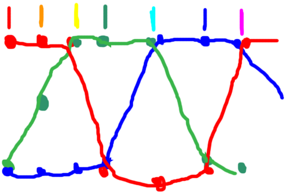
(I apologize for the graph’s crapulence. I bet you there’s a good version of this somewhere on the web, but it wasn’t on the first page of search results, so I just scriggled this out.)
The lines represent the amounts of R, G, and B components that are present in each point along the spectrum. The vertical bars at the top are the colors that (approximately) result from those RGB combinations.
The graph shows the following behavior: For each component (R, G, and B):
If the component is not at the the lower limit and the next component (e.g. the next component after the R component is G) is at the upper limit, that component will descend.
If the component is not at the upper limit and the next component is at the lower limit, that component will ascend.
Otherwise, that component doesn’t change.
Implementation
Once you know the above, implementation is fairly straightforward. If you want an example, though, here’s my cocos2d-oriented implementation in Objective-C on github.
OGColorTools contains the code that does the color shifting. The meat of the code is in the method color:shiftHue:inDirection:. OGHueShiftExampleLayer is a simple example layer that creates a sprite and shifts its color every time the layer is tapped. You will need to provide your own bitmap and load it into the sprite for this to work.
Enjoy your hue shifting!
Instead of deciding the value of each color component via a logical structure (if/then) that uses each component’s state relative to the other color components, the GLSL implementation just plugs the hue shift into an equation.
That equation describes the graph of the RGB changes from the original post. Here it is graphed out nicely on Desmos:
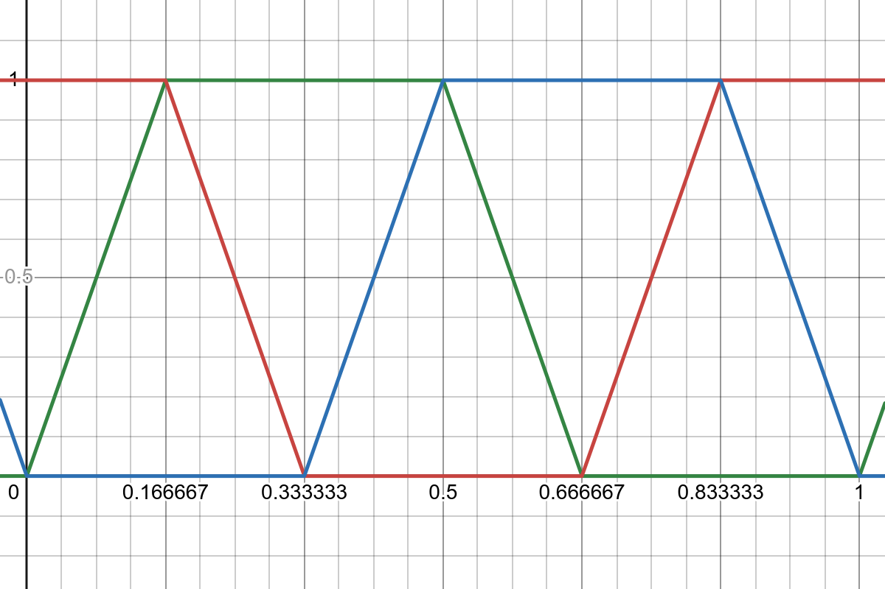
Each line (R, G, and B) is a triangle wave equation with a clamp to keep it inside 0.0 and 1.0, so you get these half-hexagon shapes. Here’s the equation for the green component:
Here, a is amplitude (set to 1.5 in the graph above), and p is period (set to 1 in the graph above).
Depending on your background, the equation may be a little easier to read in GLSL:
#define RGB_PERIOD 1.
#define RGB_AMP 1.5
float rgbWave(float x, float phaseShift) {
float y = mod(x + RGB_PERIOD/2. + phaseShift, RGB_PERIOD);
y = abs(y - RGB_PERIOD/2.);
y = 4. * RGB_AMP * y - RGB_AMP + .5;
return clamp(y, 0., 1.);
}
rgbWave takes a value, x, from 0 to 1 that represents the hue, with 0 being the hue at the start of the spectrum and 1 being the hue at the end of the spectrum. It returns the value of one component of the color at x.
The particular color component is specified by the
phaseShift parameter because each component’s wave is the same; they just have different phase shifts. For green, phaseShift will be -1/6. At an x of 0, the green value will be 0, and an x of 1 will also yield 0. At x = 0.5, the green value will be 1. (Blue will also be 1 at that point, and the resulting color will be a cyan.)
Though the equation looks complex, from an implementation standpoint, this is simpler than the old Objective-C implementation, which had to track state. And fortunately, there’s a simpler equation we can use in place of this sawed-off triangles equation.
Sine wave simplicity
The triangle waves can be approximated with sine waves. Here’s some sine waves (in dashed lines) superimposed over the triangle waves.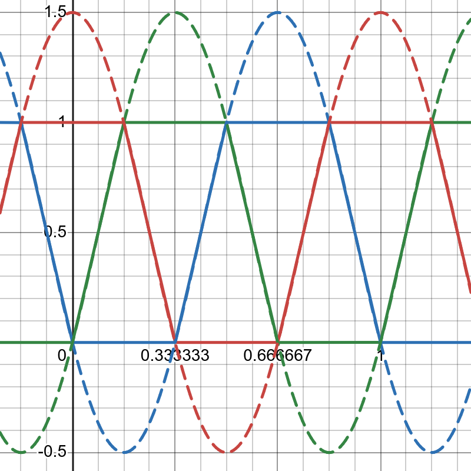
Here is the equation for the green sine wave (with clamping between 0 and 1 added):
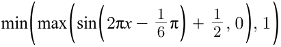 In GLSL:
float rgbSineWave(float x, float phaseShift, float amp) {
return clamp(amp * sin(2. * PI * x + phaseShift) + .5, 0., 1.);
}
That’s it! So small a function.
Alternative spectrums
An upside to this equation-based implementation is that you can easily create alternative spectrums for your own use by changing various coefficients. Here’s a few.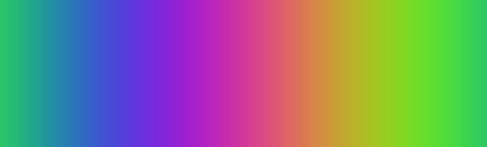
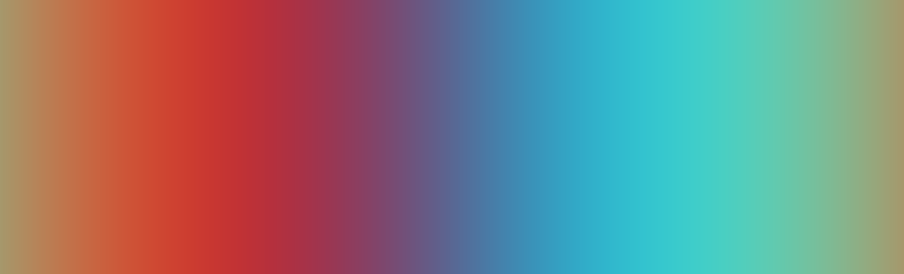
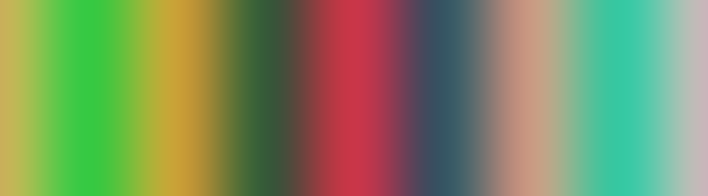
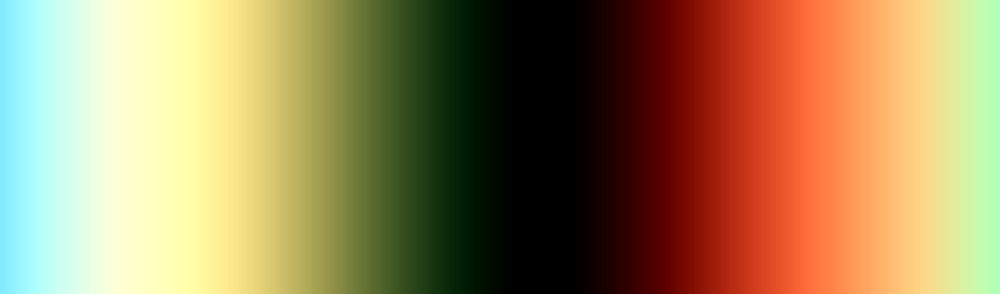
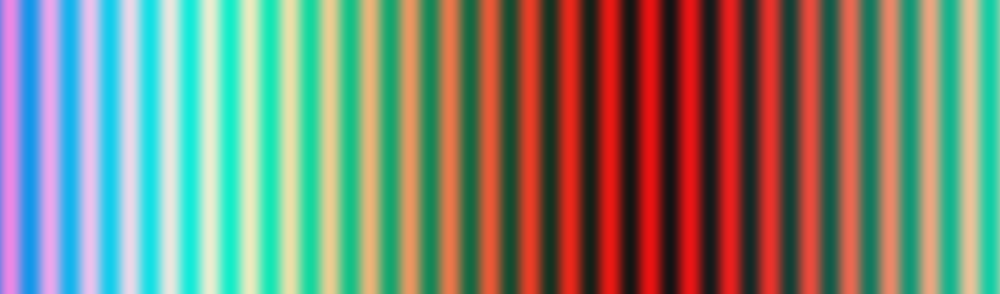
As discussed in the original post, the further apart the highest and lowest components of the RGB value are, the more saturated the resulting color is. So, increasing the amplitude of the sine wave will increase the saturation; decreasing it will get you a grayer spectrum.
The phase shift of each wave determines how it’ll combine with other waves. By altering the default phase shifts of the R, G, and B waves, you can create points in the graph at which everything comes close to being in sync (and has peaks and troughs at nearly the same point). You can also find shift combinations that’ll eliminate certain colors, like the mostly red and blue one above.
The period size of the waves can spread out a color component’s intensity across the spectrum if you make it large. If you make it small, it will form small repeating bands.
Here is a tool that you can use to see what happens when you manipulate the phase shifts and amplitude of the waves.
And here is the code for the shader in that tool:
#version 300 es precision mediump float; #define RGB_PERIOD 1. #define RGB_AMP 1.5 #define PI 3.1415927 out vec4 outColor; uniform vec2 u_resolution; uniform int u_rgbWaveStyle; // Wave amplitude input variable uniform float u_rgbAmp; // Wave phase shift input variables uniform float u_rShift; uniform float u_gShift; uniform float u_bShift; // Input variable that tells us whether we should draw the RGB waves over // the colors or not. uniform int u_drawRGBWaves; // Given a value from 0 to 1 that represents progress along the spectrum, // find out what the value of the RGB component should be, assuming a // clamped triangle wave model of the spectrum. float rgbWave(float x, float phaseShift) { float y = mod(x + RGB_PERIOD/2. + phaseShift, RGB_PERIOD); y = abs(y - RGB_PERIOD/2.); y = 4. * RGB_AMP * y - RGB_AMP + .5; return clamp(y, 0., 1.); } // Given a value from 0 to 1 that represents progress along the spectrum, find // out what the value of the RGB component should be, assuming a clamped // sine wave model of the spectrum. float rgbSineWave(float x, float phaseShift, float amp) { return clamp(amp * sin(2. * PI * x + phaseShift) + .5, 0., 1.); } // Main function, which answers the question: What should the color be at // this location on the drawing surface? void main() { vec2 st = gl_FragCoord.xy/u_resolution.xy; // Get the R, G, and B values, passing the horizontal location as the // progress through the spectrum and a different phase shift for each // color component. float r = rgbSineWave(st.x, u_rShift * PI, u_rgbAmp); float g = rgbSineWave(st.x, u_gShift * PI, u_rgbAmp); float b = rgbSineWave(st.x, u_bShift * PI, u_rgbAmp); // If the wave style is set to triangle (instead of sine), get the RGB // values using the triangle wave equation. if (u_rgbWaveStyle == 0) { r = rgbWave(st.x, u_rShift); g = rgbWave(st.x, u_gShift); b = rgbWave(st.x, u_bShift); } // Compose the color with the three color components. vec3 color = vec3(r, g, b); // If we should be graphing the color compontent waves, draw over the // color with either pure red, green, or blue if the given y value is // near the r, g, or b value. if (u_drawRGBWaves == 1) { float greenLineOn = 1. - step(.01, abs(st.y - g)); if (greenLineOn > 0.) { color = vec3(0., 1., 0.); } else { float redLineOn = 1. - step(.01, abs(st.y - r)); if (redLineOn > 0.) { color = vec3(1., 0., 0.); } else { float blueLineOn = 1. - step(.01, abs(st.y - b)); if (blueLineOn > 0.) { color = vec3(0., 0., 1.); } } } } // Set the output color. outColor = vec4(color, 1.); }To use it in your own shader, you can just copy out the
rgbSineWave and pass it a hue value and a phase shift, as you see above in the main function.
Once again, enjoy shifting hues, this time in GLSL and maybe on alternative spectrums!